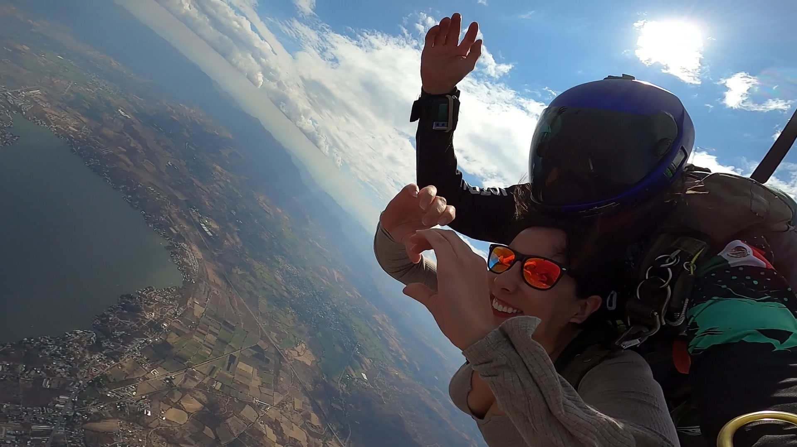
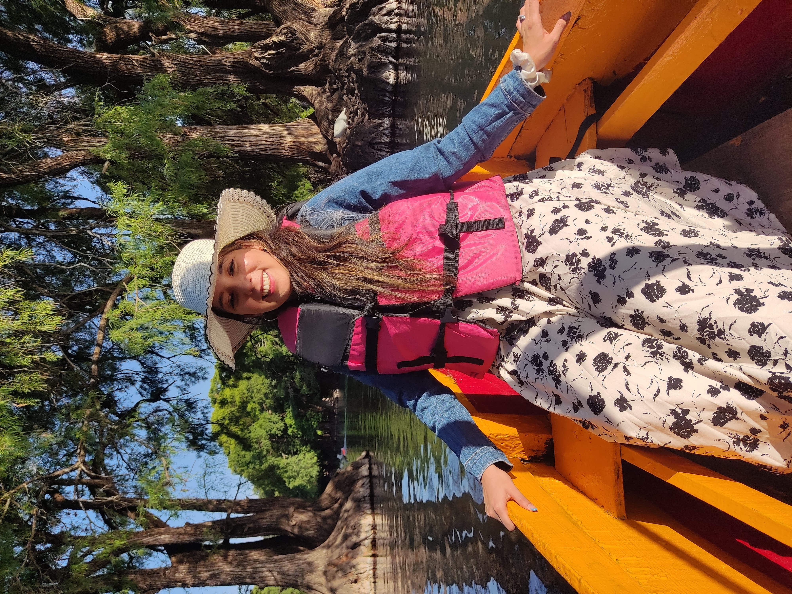
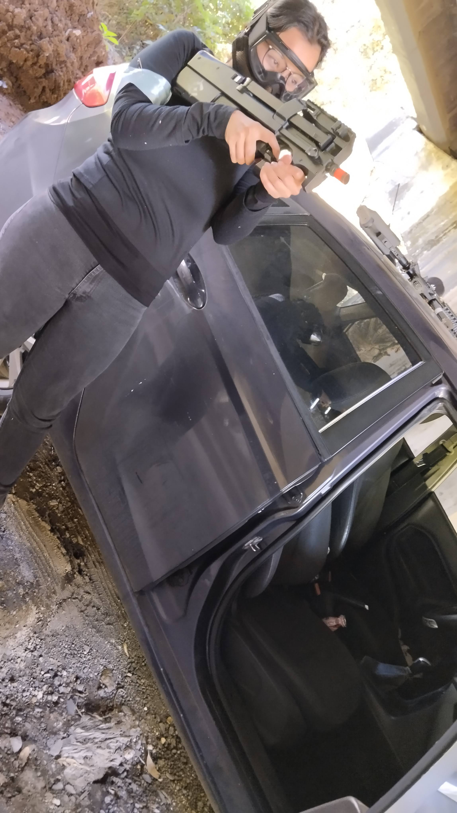

Para ti, mi amor
Mi Pao, mi motorcito
Mi amor, quería hacerte algo especial para tu cumpleaños, algo que no fuera solamente una página bonita,
sino un lugar donde pudiera decirte muchas de las cosas que me haces sentir. A veces siento que no encuentro
las palabras suficientes para explicarte cuánto te amo, cuánto te admiro y cuánto agradezco tenerte en mi vida.
Tú eres mi Pao, mi niña, mi esposa y mi motorcito para echarle ganas a la vida. Gracias a ti he podido hacer
muchas cosas, he podido vivir aventuras, disfrutar momentos nuevos y sentir que la vida tiene un sentido más bonito
cuando la comparto contigo. Si tú no estuvieras, muchas experiencias no las viviría igual, porque gran parte de lo
bonito está en poder voltearte a ver, sonreír contigo y saber que estamos caminando juntos.
Me encanta estar contigo. Disfruto mucho compartir mi vida contigo, desde los días tranquilos hasta los días en los
que toca ser fuertes. Tú llenas mi corazoncito de amor, me das paz, me das alegría y también me das ese empujoncito
que necesito cuando siento que ya no tengo mucha pilita para seguir.
Eres una persona muy especial, muy resiliente y muy sorprendente. Tienes un corazón enorme, una forma muy tuya de
sobrellevar las cosas y una fuerza que admiro muchísimo. A veces quizá no te das cuenta de todo lo que significas,
pero para mí eres una de las personas más importantes, bonitas y valiosas que existen.
Te amo con todo mi corazón. ❤️
Nuestra historia
Nosotros empezamos con algo bien concreto: estar juntos
La mayoría de las parejas inician sin metas, sin sueños o sin algo definido. Nosotros empezamos con algo bien
concreto: estar juntos. Desde el principio, lo nuestro fue querer caminar de la mano, construir algo propio y
seguir eligiéndonos incluso cuando la vida cambiara.
Hoy ya tenemos un año de casados, y este 14 de diciembre de 2026 cumpliremos dos años. La vida ha cambiado mucho,
y nosotros también hemos cambiado como personas. Nuestro pensamiento es diferente, nuestra forma de ver las cosas
ha crecido, pero hay algo que sigue firme: seguimos juntos, echándole muchas ganitas a todo.
Eso para mí vale muchísimo. Porque amar también es crecer, aprender, adaptarse, tener paciencia, apoyarse y seguir
diciendo “aquí estoy” incluso cuando las cosas no son perfectas. Y contigo, mi Pao, yo quiero seguir diciendo eso
todos los días.
Mi Pao
Mi niña valiente, curiosa y aventurera

Porque incluso con miedo, eliges avanzar
Una de las cosas que más admiro de ti es tu valentía. No porque nunca tengas miedo, sino porque aun cuando el
miedo aparece, te importa más seguir adelante que quedarte con él. Eso habla muchísimo de tu corazón y de tu
fuerza.
La foto del paracaídas significa eso para mí: mi niña siendo valiente, atreviéndose a vivir algo enorme,
demostrando que aunque algo dé miedo, también puede convertirse en un recuerdo increíble. Verte así me llena
de orgullo, porque eres capaz de mucho más de lo que a veces imaginas.

Porque contigo descubrir el mundo se siente más bonito
La foto del lago me recuerda esa curiosidad tuya por seguir descubriendo el mundo. Me gusta que me acompañes
en ese proceso, que podamos conocer lugares, vivir momentos y guardar recuerdos que se vuelven nuestros.
Contigo, cualquier lugar puede sentirse especial. No importa si es una salida grande o un momento sencillo:
cuando estoy contigo, siento que la vida se disfruta más y que cada experiencia tiene más sentido.

Porque no le tienes miedo a la aventura
Esta foto representa algo que amo de ti: que mi niña no le tiene miedo a la aventura. Y yo disfruto muchísimo
poder compartir contigo esos momentos nuevos, esas experiencias que nos sacan de la rutina y nos recuerdan que
la vida también es para vivirla con emoción.
Tú haces que las aventuras sean más bonitas. Tú haces que los recuerdos tengan más amor. Tú haces que mi vida
se sienta más completa.
Fotitos de mi Pao
Nuestra boda
El día más feliz de mi vida
Nuestra boda siempre va a tener un lugar especial en mi corazón. Ese día fue el día más feliz de mi vida porque
pude saber, sentir y celebrar que iba a estar con mi Pao toda la vida. Fue el día en el que te elegí como mi esposa,
pero también como mi compañera, mi hogar, mi familia y mi persona favorita.
Cuando veo esas fotos, recuerdo la emoción de saber que estábamos empezando una etapa nueva. Una etapa donde no todo
sería perfecto, pero sí nuestro. Una etapa donde seguiríamos cambiando, creciendo y aprendiendo, pero siempre con la
intención de seguir juntos y cuidarnos.
Los dos
Pedacitos de nosotros
Estas fotos son pedacitos de nosotros. No necesitan un orden exacto porque cada una guarda algo bonito:
una salida, una risa, una aventura, un momento tranquilo o simplemente una prueba de que hemos compartido vida.
Me gusta verlas porque me recuerdan que contigo he vivido cosas que guardo con mucho amor. Gracias por acompañarme,
por estar conmigo, por hacerme sentir querido y por convertir momentos simples en recuerdos que se quedan en el corazón.
Una cartita más
Gracias por ser tú
Gracias por ser mi Pao. Gracias por tu amor, por tu paciencia, por tu forma de acompañarme y por todo lo que haces
incluso cuando quizá no lo notas. Gracias por impulsarme cuando me falta energía, por creer, por intentar y por seguir
echándole ganitas conmigo.
Yo sé que la vida cambia, que nosotros cambiamos y que hay etapas donde toca aprender mucho, pero también sé que
mientras sigamos juntos, con amor y con ganas, podemos seguir construyendo algo muy bonito. Tú eres mi esposa,
mi compañera, mi motorcito y una de las razones más grandes por las que quiero seguir adelante.
En tu cumpleaños quiero desearte una vida llena de amor, salud, tranquilidad, aventuras bonitas y sueños cumplidos.
Quiero que seas feliz, que te sientas amada y que nunca olvides lo mucho que vales.
Feliz cumpleaños, mi niña hermosa. Te amo muchísimo. ❤️
Bloopers
Y para cerrar... una sonrisa
Porque también somos risas, caras chistosas, momentos espontáneos y recuerdos que nos sacan una sonrisa.
Me encanta que también tengamos este lado divertido, porque contigo hasta lo chistoso se vuelve especial.